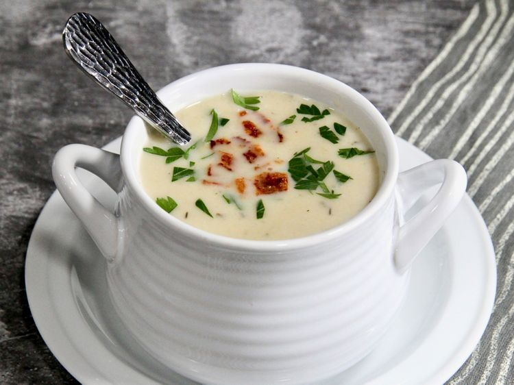

HOME
Garlic Soup
This is where i will start giving you a how to guide on anti vampire juice...
also known as garlic soup!

Here is what youl need!
- Garlic Bulbs x3
- Chicken Stock
- Water
- salt
- pepper
- onions
- Double Cream
How to make the anti vamp juice
- Chop the hell out of the onions
- Peel and chop garlic
- Boil stock
- Mix it all together
- Use a blender or fork to mash it all up
- Drink it with a straw
- Live vamp free!!!